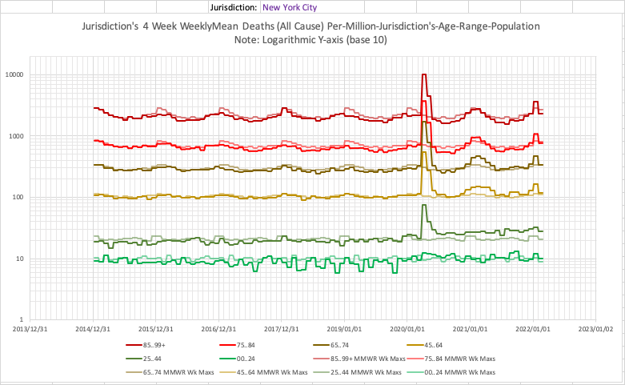
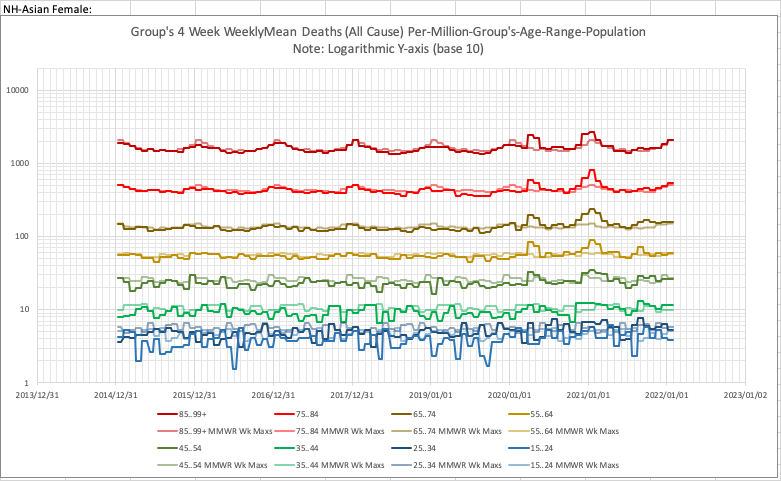
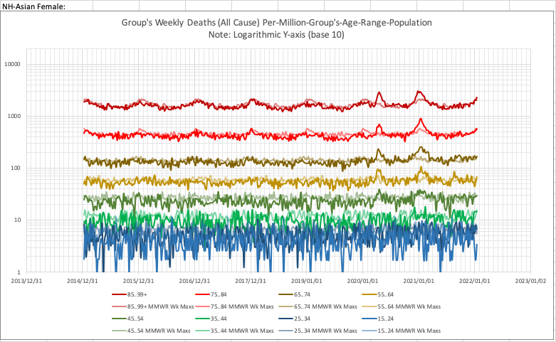

The charts here just show comparisons/contrasts between using the WeeklyMean rates over 4 week intervals (or, rarely, a 5 weeks interval to deal with a MMWR 53) vs. the weekly data.
Note: N*(N WkInterval's WeeklyMean) gets the total for the N week interval involved.
CDC data updates used: Jurisdiction data, 2022-Mar-30 (publishing date, data is somewhat older); Group & Sex data, 2022-Feb-23 (publishing date, data is somewhat older).
Note: The more recent weeks charted are more likely to still have significantly incomplete data.
Note: "NH-" prefixes indicate "not hispanic".
Note: N*(N WkInterval's WeeklyMean) gets the total for the N week interval involved.
CDC data updates used: Jurisdiction data, 2022-Mar-30 (publishing date, data is somewhat older); Group & Sex data, 2022-Feb-23 (publishing date, data is somewhat older).
Note: The more recent weeks charted are more likely to still have significantly incomplete data.
Note: "NH-" prefixes indicate "not hispanic".



